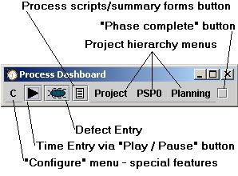

We feel that the PSP and the TSP are remarkable technologies that can change the face of the software industry, and we share the SEI's zeal to promote their widespread use. We feel that a freely available, powerful support tool could help to remove one of the most significant barriers to PSP / TSP adoption. We therefore aim to develop a world-class tool under the open-source model, and distribute it freely to anyone using the PSP and/or TSP. We feel that this is the least we can do to thank the SEI for developing and distributing these remarkable processes.

The Process Dashboard attempts to keep itself as small as possible to save valuable screen real estate for the actual work of software development. In a very small space the dashboard gives access to a stopwatch-like timer for timing activities, a defect entry dialog for capturing defect information, all the PSP scripts and forms necessary for doing PSP work, a handy "completion button" that allows a quick and easy way to tell the tool that a phase of development is complete, menus that llow navigation through the project work breakdown structure hierarchy, and a configuration menu to allow access to other features of the tool.
Pick an item for further help:
The Process Dashboard uses a web browser for the bulk of its data entry and reporting. See the Installation help topic for more info about which web browsers are supported and how to install them if necessary.
The connection between the dashboard and the browser is facilitated by a very small web server that is running within the dashboard. It is this web server, combined with some Java scripting, that provides all the live data communication between the dashboard and the browser. One consequence of this is that the various reports and charts that are displayed within the browser will not be available unless the dashboard is running.
For more information about the process scripts see the process scripts help topic.
| On-the-job use of this tool is not intended to replace formal PSP training. Engineers interested in using the PSP should complete a PSP training course taught by an SEI certified PSP Instructor. |